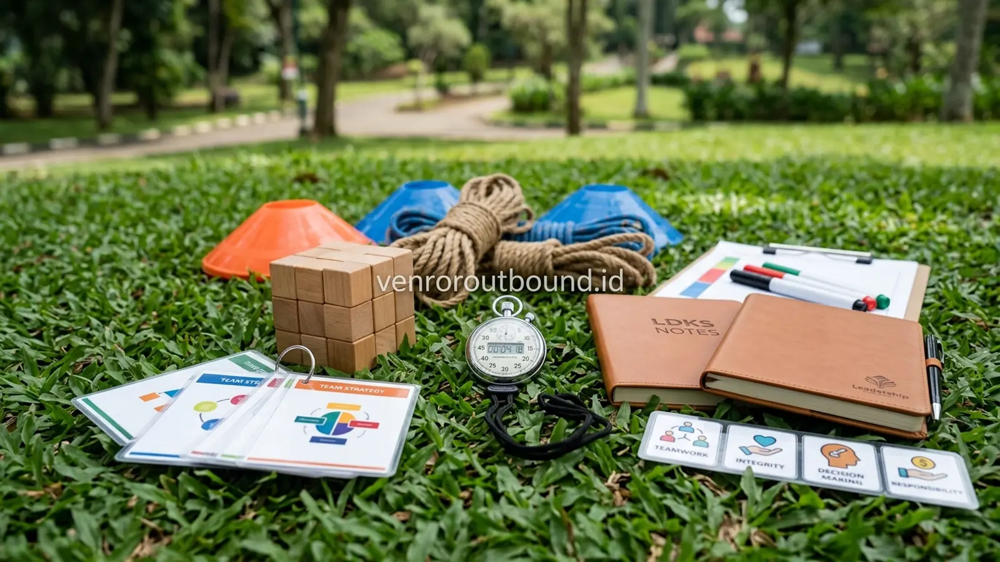

Setiap pergantian periode kepengurusan Organisasi Siswa Intra Sekolah (OSIS), Majelis Perwakilan Kelas (MPK), maupun ekstrakurikuler sekolah, pihak sekolah dihadapkan pada tugas mulia untuk membekali para calon pengurus dengan kematangan mental dan kepemimpinan. Pemahaman mengenai Anggaran Dasar/Anggaran Rumah Tangga (AD/ART), hierarki jabatan, dan administrasi proposal tentu penting. Namun, bekal teoritis tersebut sering kali belum memadai ketika pengurus siswa berhadapan dengan gesekan komunikasi, kepanikan saat mengelola acara sekolah, atau kebingungan dalam mengambil keputusan bersama.
Kepemimpinan tidak tumbuh semata-mata dari hafalan materi di ruang kelas ber-AC. Siswa membutuhkan ruang latihan nyata di mana mereka dapat belajar berinteraksi, membagi tugas, menghadapi kegagalan taktis, serta mengevaluasi tindakan mereka dalam suasana yang aman dan mendidik. Di sinilah program outbound kepemimpinan siswa hadir sebagai media pembelajaran alternatif yang menempatkan pengalaman luar ruang sebagai sarana pembentukan karakter tangguh.
1. Apa Itu LDKS Berbasis Outdoor Learning?
Latihan Dasar Kepemimpinan Siswa (LDKS) berbasis outdoor learning membantu siswa menguji integritas, jiwa kepemimpinan, dan komunikasi organisasi di ruang terbuka. Aktivitas luar kelas ini dapat menjadi sarana untuk melatih kemandirian, kerja sama, pengambilan keputusan, dan rasa tanggung jawab sosial melalui pengalaman langsung yang terstruktur dan aman.
Dalam paradigma pendidikan modern, LDKS outdoor diposisikan sebagai proses pembinaan kepemimpinan humanis. Pendekatan ini secara tegas membedakan diri dari pola-pola perpeloncoan masa lalu yang mengandalkan bentakan, hukuman fisik sewenang-wenang, atau intimidasi verbal. Sebaliknya, setiap rintangan yang dirancang memiliki tujuan pembelajaran yang jelas (learning objective), dipandu oleh fasilitator yang mengedepankan komunikasi edukatif, serta melibatkan guru pembina sebagai pengamat perkembangan siswa.
Melalui simulasi rintangan bertingkat di alam terbuka, siswa diajak mengeksplorasi potensi diri, mengikis rasa ragu, serta belajar bahwa seorang pemimpin yang baik bukan mereka yang paling keras berteriak, melainkan mereka yang mampu mendengarkan, merangkul anggota tim, dan memberikan keteladanan tindakan.
2. Mengapa Kepemimpinan Siswa Memerlukan Pengalaman Lapangan?
Dunia remaja merupakan fase transisi krusial dalam pembentukan konsep diri dan keterampilan sosial. Ketika siswa hanya diberikan ceramah satu arah tentang pentingnya kerja sama, pesan tersebut kerap berhenti sebagai konsep abstrak. Namun, ketika mereka ditempatkan dalam skenario regu yang harus memindahkan beban bersama menggunakan tali dan koordinasi langkah yang serentak, mereka merasakan langsung konsekuensi dari egoisme dan kurangnya komunikasi.
Belajar melalui pengalaman langsung di luar ruang (outdoor experiential education) memberikan sejumlah manfaat pedagogis:
- Mencairkan Sekat Formalitas: Di lingkungan terbuka yang santai dan hijau, rasa canggung antarangkatan atau antarkelas dapat lebih cepat mencair dibandingkan suasana formal di sekolah.
- Keterlibatan Penuh Seluruh Indra: Siswa bergerak, berpikir, merasakan ketegangan tantangan, dan bergembira bersama, sehingga materi kepemimpinan berakar kuat dalam ingatan jangka panjang mereka.
- Umpan Balik Instan (Instant Feedback): Jika strategi yang disusun regu kurang matang, rintangan simulasi akan segera memperlihatkan kekurangannya, memungkinkan siswa belajar dari kesalahan secara langsung tanpa rasa takut dihakimi.
3. 6 Kompetensi Utama yang Terasah Melalui Tantangan Luar Ruang
Program LDKS berbasis outdoor learning dirancang untuk menumbuhkan enam pilar kompetensi kepemimpinan siswa:
1. Leadership (Kepemimpinan Berorientasi Solusi)
Siswa belajar mengambil inisiatif, mengarahkan kelompok dengan bahasa yang memotivasi, dan berani memikul tanggung jawab atas arah langkah regu. Mereka memahami bahwa kepemimpinan adalah tentang melayani dan memberdayakan anggota, bukan memerintah semata.
2. Teamwork (Kerja Sama & Kesatuan Hati)
Tantangan kelompok menuntut kontribusi aktif dari setiap individu. Siswa yang cenderung dominan belajar menahan diri untuk memberi ruang bagi rekannya, sementara siswa yang pemalu terdorong untuk berani menyuarakan gagasan.
3. Assertive Communication (Komunikasi Asertif & Terbuka)
Dalam kondisi waktu yang terbatas, instruksi yang membingungkan dapat menggagalkan misi. Siswa dilatih menyampaikan pesan secara jelas, singkat, serta menerapkan teknik mendengarkan secara aktif (active listening).
4. Problem Solving & Critical Thinking (Penalaran Kritis)
Menghadapi teka-teki taktis di lapangan melatih siswa untuk mengidentifikasi masalah utama, mempertimbangkan berbagai opsi alternatif, dan mengevaluasi risiko sebelum mengambil tindakan.
5. Personal Responsibility (Rasa Tanggung Jawab Pribadi)
Siswa belajar bahwa setiap tugas kecil yang diamanahkan kepada mereka memiliki dampak langsung terhadap keberhasilan tim secara keseluruhan. Sikap saling menyalahkan digantikan dengan evaluasi diri yang konstruktif.
6. Adaptability & Resilience (Daya Lentur & Ketahanan Mental)
Berada di alam terbuka mengajarkan siswa untuk beradaptasi dengan perubahan situasi, cuaca, dan kondisi yang tidak selalu sesuai rencana tanpa kehilangan semangat juang.

4. Menanamkan Nilai Integritas dan Kemandirian Siswa Secara Positif
Integritas bukan sekadar slogan yang dihafal, melainkan keselarasan antara perkataan dan perbuatan. Dalam simulasi LDKS outdoor, aspek integritas dapat diuji melalui permainan yang memiliki aturan main ketat di mana pengawasan fasilitator dilakukan secara tidak kentara. Siswa diajak menyadari bahwa kepatuhan terhadap kesepakatan bersama tetap harus dijaga meskipun tidak ada orang lain yang melihat.
Selain integritas, kemandirian siswa juga diasah melalui pengelolaan logistik pribadi, ketepatan waktu mengikuti rundown, serta pembagian peran menjaga kebersihan dan ketertiban area kegiatan. Pembiasaan disiplin positif semacam ini menumbuhkan rasa percaya diri bahwa mereka mampu mengelola tanggung jawab besar sebagai representasi suara seluruh siswa di sekolah.
5. Pendekatan Experiential Learning: Experience, Reflection, Learning, Application
Agar aktivitas rintangan luar ruang tidak sekadar menjadi hiburan fisik sesaat, program wajib dibingkai dalam siklus Experiential Learning yang terstruktur:
- Experience (Mengalami): Siswa bersama regunya menghadapi simulasi tantangan nyata di lapangan terbuka, merasakan dinamika kerja sama dan ketegangan pengambilan keputusan.
- Reflection (Merefleksikan): Selesai permainan, fasilitator mengajak kelompok duduk melingkar untuk berdiskusi: Apa yang berjalan lancar? Apa kendala yang dihadapi? Bagaimana perasaan masing-masing anggota saat terjadi perbedaan pendapat?
- Learning (Menarik Pelajaran): Siswa mengonseptualisasikan wawasan yang mereka temukan sendiri menjadi prinsip dasar kepemimpinan dan manajemen organisasi.
- Application (Menerapkan): Siswa merumuskan langkah konkret bagaimana pembelajaran tersebut akan diterapkan dalam menjalankan program kerja OSIS di sekolah.
6. Tabel Analisis Kompetensi & Penerapannya dalam Organisasi OSIS
Berikut adalah tabel pemetaan bagaimana setiap tantangan simulasi di lapangan luar ruang dikontekstualisasikan menjadi keterampilan nyata dalam kepengurusan OSIS:
| Kompetensi Inti | Contoh Simulasi Outdoor | Wawasan Pembelajaran | Penerapan Nyata di Organisasi OSIS |
|---|---|---|---|
| Leadership | Strategic Grid Navigation | Mengarahkan regu dengan visi jelas dan ketenangan sikap | Memimpin rapat koordinasi divisi dan mengawal program kerja |
| Teamwork | Pipeline Resource Relay | Pentingnya sinkronisasi ritme dan saling percaya antardivisi | Kolaborasi antarseksi bidang saat menggelar acara pentas seni |
| Communication | Blindfolded Guide Challenge | Presisi kata, kejelasan artikulasi, dan teknik konfirmasi pesan | Penyampaian informasi program kepada guru pembina dan siswa |
| Problem Solving | Tower of Trust Strategy | Menganalisis akar masalah dan menguji kelayakan hipotesis | Mengatasi kendala perizinan atau keterbatasan anggaran acara |
| Responsibility | Shared Ball Balance | Kelalaian satu anggota berdampak pada kegagalan seluruh tim | Kedisiplinan menyelesaikan laporan pertanggungjawaban (LPJ) |
| Adaptability | Dynamic Rule Change Game | Fleksibilitas merespons perubahan kondisi tanpa panik | Menyesuaikan rundown kegiatan sekolah saat terjadi perubahan cuaca |
7. Contoh Struktur Rancangan Program LDKS 2 Hari 1 Malam
Durasi 2 hari 1 malam (2D1N) merupakan salah satu pilihan format yang banyak dipertimbangkan oleh sekolah karena memberikan alokasi waktu yang cukup untuk memadukan sesi lapangan dengan sesi kontemplasi malam. Berikut adalah contoh struktur kegiatan yang bersifat ilustratif:
| Hari & Sesi | Agenda Utama | Fokus Kegiatan & Sasaran Sikap |
|---|---|---|
| Hari 1 — Pagi | Opening, Safety Briefing, & Ice Breaking | Penyelarasan komitmen disiplin dan pencairan suasana kelompok |
| Hari 1 — Siang | Leadership & Teamwork Challenge Stations | Rangkaian simulasi pemecahan masalah dan komunikasi regu |
| Hari 1 — Sore | Guided Debriefing & Personal Reflection | Evaluasi dinamika kelompok dan refleksi nilai kepemimpinan diri |
| Hari 1 — Malam | Character Building Session & Visi Organisasi | Kontemplasi nilai integritas dan penyusunan komitmen kepengurusan OSIS |
| Hari 2 — Pagi | Morning Agility & Strategic Problem Solving | Olah kebugaran, simulasi strategi bertingkat, dan kerja sama lintas divisi |
| Hari 2 — Siang | Action Plan Presentation & Closing Ceremony | Pemaparan komitmen rencana kerja nyata, evaluasi penutup, dan foto bersama |
*Catatan: Susunan rancangan di atas merupakan contoh ilustratif. Jadwal, durasi, dan jenis aktivitas dapat disesuaikan sepenuhnya berdasarkan karakteristik siswa, kebijakan sekolah, serta ketersediaan waktu kalender akademik.
Tingkatkan Kualitas Kepemimpinan OSIS Sekolah Anda
Rancang program LDKS outdoor yang edukatif, aman, dan berkarakter bersama tim fasilitator kami. Diskusikan kebutuhan sekolah Anda via WhatsApp +62 82211221909.
Konsultasi Program LDKS via WhatsApp8. Kesimpulan & Rekomendasi bagi Kepala Sekolah dan Guru Pembina
Latihan Dasar Kepemimpinan Siswa (LDKS) berbasis outdoor learning bukan sekadar agenda seremonial tahunan, melainkan investasi strategis dalam membangun fondasi karakter generasi muda. Dengan memadukan tantangan fisik yang proporsional, teka-teki penalaran logis, serta sesi refleksi yang mendalam, sekolah dapat mencetak kader pengurus OSIS yang memiliki integritas tinggi, kepedulian sosial, serta keterampilan manajerial yang teruji.
Pastikan program outbound kepemimpinan siswa dirancang dengan mengutamakan prinsip edukatif, keselamatan peserta, serta koordinasi yang erat antara tim fasilitator pendamping dan pihak sekolah.
Pertanyaan Sering Diajukan (FAQ)

Arby Ardiansyah
Arby Ardiansyah memfokuskan kajian pada pengembangan kepemimpinan pelajar, desain kurikulum outdoor experiential learning, serta metodologi pembinaan karakter positif bagi institusi pendidikan di Indonesia.